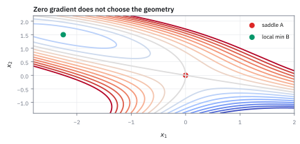
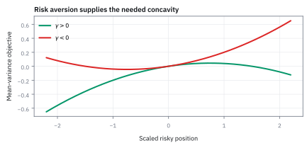

12.3 The Hessian and Second-Order Conditions
gradient เป็นศูนย์บอกแค่ว่าพื้นราบ ความโค้งในทุกทิศ ซึ่งเก็บอยู่ใน Hessian เป็นตัวตัดสินว่าเป็นก้นหลุม ยอดโดม หรืออานม้า
ระบบจัดพอร์ตของโต๊ะแก้สมการ “gradient ของ objective เป็นศูนย์” ให้พอร์ตหุ้น (คาดหวัง 12% ต่อปี SD 20%) กับพันธบัตร (6%, 10%) correlation 0.30 และมีเงินสดให้ฝากหรือกู้ที่ 2% ต่อปี นักวิเคราะห์คนแรกใส่ความกลัวความเสี่ยง $\gamma=2$ ได้หุ้น 52.2% พันธบัตร 68.7% อีกคนใช้ library ที่นิยามเครื่องหมายกลับกัน จึงเผลอใส่ $\gamma=-2$ ได้หุ้น −52.2% พันธบัตร −68.7% ทั้งสองจอขึ้นว่า gradient = 0 ทั้งสองคือพอร์ตที่ดีที่สุดของ objective ตัวเองใช่ไหม?
ลองตอบก่อนเปิดเฉลย
ไม่ใช่ พอร์ตแรกเป็นยอดสูงสุดของทั้งพื้นผิว ค่าเป้าหมาย 0.0598 เพราะความโค้งของมันคือ $-4V$ ซึ่งคว่ำลงทุกทิศ พอร์ตที่สองเป็นจุดต่ำสุดของ objective ตัวเอง ค่า −0.0198 เพราะความโค้ง $+4V$ หงายขึ้นทุกทิศ และ objective นั้นไม่มีจุดสูงสุดเลย กู้มาซื้อหุ้น 10 เท่าของทุนได้ค่า 9.02 และยิ่งกู้ยิ่งสูง ความชันศูนย์แยกสองกรณีนี้ไม่ออก ความโค้งแยกได้ในบรรทัดเดียว
สิ่งที่เราจะสร้าง
12.2 หาผู้สมัครด้วย gradient เท่ากับศูนย์ แต่ความชันศูนย์เกิดได้ทั้งที่ก้นหลุม บนยอดโดม และบนอานม้าที่ขึ้นทิศหนึ่งลงอีกทิศ หน้านี้เพิ่ม derivative อันดับสอง ซึ่งในหลายตัวแปรเรียงเป็น matrix ชื่อ Hessian แล้วใช้มันตัดสิน
เราจะนิยาม Hessian พิสูจน์ว่าทำไมความโค้งเป็นตัวตัดสิน สร้างเกณฑ์ 2×2 ที่ตรวจมือได้ ทดลองกับพื้นผิวที่มีทั้งอานม้าและก้นหลุม ดูว่าก้นหลุมเฉพาะถิ่นไม่ใช่ก้นของทั้งพื้นผิว แล้วกลับมาที่พอร์ต ซึ่ง Hessian คงที่ทั้งพื้นผิว จึงตัดสินได้ทั้งแผนที่ในครั้งเดียว และจบที่ว่าทำไมเครื่องหมายของ $\gamma$ พลิกคำตอบ
ศัพท์ที่ใช้ในหัวข้อนี้
- Hessian
- matrix ของ derivative อันดับสองทุกคู่ตัวแปร วัดความโค้งทุกทิศรอบจุดหนึ่ง ใช้ตัดสินจุดที่ gradient เป็นศูนย์
- Saddle point (อานม้า)
- จุดราบที่โค้งขึ้นในบางทิศและโค้งลงในบางทิศ optimizer ที่หยุดตรงนี้ยังมีทางลงต่อได้
- Positive / negative definite
- matrix ที่ $z^{\mathsf T}Hz$ เป็นบวก (หรือลบ) ทุกทิศที่ไม่ใช่ศูนย์ ใช้รับรองก้นหลุม (หรือยอดโดม) แบบเข้ม
- Leading principal minors
- determinant ของมุมซ้ายบนขนาด 1×1, 2×2, … ใช้ตรวจ definite ด้วยมือโดยไม่ต้องหา eigenvalue
- Second-order condition
- เงื่อนไขเรื่องความโค้งที่จุดราบ: PSD เป็นเงื่อนไขจำเป็นของจุดต่ำสุด PD เป็นเงื่อนไขพอเพียง
- Risk aversion $\gamma$
- ตัวคูณที่หัก variance ออกจากผลตอบแทนใน objective ยิ่งมากยิ่งกลัว ใช้กำหนดขนาดความเสี่ยงที่ยอมถือ
สัญลักษณ์และหน่วย
| สัญลักษณ์ | ความหมาย | หน่วย |
|---|---|---|
| $H(x)$ | Hessian ที่จุด $x$ | หน่วย objective ต่อหน่วยตัวแปรกำลังสอง |
| $z$ | ทิศและระยะที่ขยับออกจากจุดที่ตรวจ | หน่วยเดียวกับตัวแปร |
| $D_1,\ D_2$ | minor มุมซ้ายบน 1×1 และ 2×2 ของ $H$ | หน่วยของ $H$ และกำลังสองของมัน |
| $\lambda_1,\ \lambda_2$ | eigenvalues ของ $H$ คือความโค้งตามสองแกนหลัก | หน่วยของ $H$ |
| $x$ | น้ำหนักหุ้นและพันธบัตร ส่วนที่เหลือ $1-x_1-x_2$ อยู่ในเงินสด (ติดลบคือกู้) | สัดส่วนของ NAV |
| $\mu,\ r_f$ | ผลตอบแทนคาดหวังรายปี และดอกเบี้ยเงินสด 2% | return ต่อปี |
| $\gamma,\ J(x)$ | ความกลัวความเสี่ยง และ objective แบบ mean-variance | ต่อหน่วย variance และ return ต่อปี |
ขั้นที่ 1 — นิยามของ Hessian: ความชันของความชัน
หนึ่งมิติมี $f''$ ตัวเดียว สองมิติมีสี่แบบ เพราะหา derivative ครั้งแรกเทียบตัวไหน ครั้งที่สองเทียบตัวไหนก็ได้ บรรทัดนี้เป็นนิยาม
ช่องทแยงคือความโค้งตามแต่ละแกน ช่องนอกทแยงคือความโค้งไขว้ คือความชันตาม $x_1$ เปลี่ยนเท่าไรเมื่อขยับ $x_2$ ถ้า derivative อันดับสองต่อเนื่อง ลำดับการหาไม่มีผล สองช่องนอกทแยงจึงเท่ากันและ $H$ สมมาตร ซึ่งทำให้ eigenvalues เป็นจำนวนจริงทุกตัว (7.6)
ขั้นที่ 2 — ทำไมความโค้งเป็นตัวตัดสิน
ต้องการรู้ว่าเดินจาก $x$ ไป $x+z$ แล้ว $f$ เปลี่ยนเท่าไร วิธีคือยุบให้เหลือตัวแปรเดียว: มองค่าบนทางเดินเป็น function ของเวลา $t$ แล้วใช้ Taylor ของตัวแปรเดียวแบบมีเศษ
บรรทัดที่สองคือ chain rule: ขยับ $t$ นิดหนึ่ง ตัวแปรแต่ละตัวขยับ $z_i$ เท่า บรรทัดที่สามทำซ้ำอีกรอบ ได้ derivative อันดับสองของทุกคู่คูณ $z_iz_j$ ซึ่งคือ $z^{\mathsf T}Hz$ บรรทัดที่สี่คือ Taylor ที่เศษเขียนเป็น $g''$ ที่จุดกลางทางจุดหนึ่ง เลข ½ จึงมาจาก Taylor ไม่ได้ถูกเสกขึ้น
ที่จุดราบ $\nabla f=0$ ผลเปลี่ยนเหลือแค่ $\tfrac12z^{\mathsf T}Hz$ ถ้า $H(x)$ เป็นบวกทุกทิศ ความต่อเนื่องทำให้ใกล้ ๆ ก็ยังบวก ทุกก้าวเล็กจึงขึ้น: ก้นหลุม ถ้ามีทิศที่ $z^{\mathsf T}Hz\lt0$ ก้าวทิศนั้นแล้วลง: ไม่ใช่ก้นหลุม
ขั้นที่ 3 — เกณฑ์ 2×2 ที่ตรวจด้วยมือ
เหลือคำถามเดียว: $z^{\mathsf T}Hz$ เป็นบวกทุกทิศไหม เขียน $H=\begin{bmatrix}a&b\\b&c\end{bmatrix}$ แล้วจัดกำลังสองสมบูรณ์ (สมมติ $a\ne0$) เพื่อแยกเป็นสองก้อนที่ดูเครื่องหมายได้ทันที
บรรทัดที่สองกางกลับได้ตรวจเอง: $a(z_1+\tfrac baz_2)^2=az_1^2+2bz_1z_2+\tfrac{b^2}{a}z_2^2$ จึงต้องหัก $\tfrac{b^2}{a}z_2^2$ คืน ตอนนี้อ่านคำตัดสินได้จากเครื่องหมายของสองตัวคูณ $D_1$ กับ $D_2/D_1$
$D_1\gt0$ และ $D_2\gt0$: บวกทั้งคู่ ก้นหลุม $D_1\lt0$ และ $D_2\gt0$: ลบทั้งคู่ ยอดโดม $D_2\lt0$: สองก้อนต่างเครื่องหมาย มีทิศขึ้นและทิศลง อานม้า $D_2=0$: มีทิศที่ความโค้งเป็นศูนย์ เกณฑ์นี้ตัดสินไม่ได้
ตรวจด้วย eigenvalues อีกทาง (7.6): $\lambda^2-(a+c)\lambda+D_2=0$ ผลคูณของสองรากคือ $D_2$ ผลบวกคือ trace $a+c$ ถ้า $D_2\lt0$ สองรากต่างเครื่องหมายแน่นอน ถ้า $D_2\gt0$ เครื่องหมายเดียวกันและตามเครื่องหมายของ trace สองวิธีต้องตอบตรงกันเสมอ ถ้าขัดกันแปลว่าคิดเลขผิด
Figure 12.3a — เส้นตัดหนึ่งมิติของสามรูปทรง

ขั้นที่ 4 — พื้นผิวทดสอบ: หาจุดราบสองจุด แล้วจับอานม้าที่ A
ใช้พื้นผิวที่คิดมือได้ $f=x_1^2+3x_1x_2+x_2^3$ พจน์กำลังสามทำให้ความโค้งเปลี่ยนตามตำแหน่ง หา partial derivative แล้วตั้งให้เป็นศูนย์พร้อมกัน
สมการแรกเป็นเส้นตรง จึงดึง $x_1$ ออกมาแทนในสมการที่สอง ได้สองรากคือ $x_2=0$ กับ $1.5$ ที่ A $D_2$ ติดลบ จึงเป็นอานม้า eigenvalues บวกหนึ่งลบหนึ่ง ผลคูณ −9 และผลบวก 2 ตรงกับ $D_2$ และ trace ตามขั้นที่ 3
ตรวจโดยไม่ใช้ทฤษฎีเลย: เดินจาก A ไป $(0.1, 0)$ ได้ $f=0.01$ ขึ้น เดินไป $(0.1, -0.1)$ ได้ $0.01-0.03-0.001=-0.021$ ลง จุดเดียวกันขึ้นได้และลงได้ จึงไม่ใช่ทั้งต่ำสุดและสูงสุด
Figure 12.3b — เส้นชั้นรอบอานม้า A และก้นหลุม B

ขั้นที่ 5 — จุด B เป็นก้นหลุม: สามวิธีตอบตรงกัน
ที่ B ช่องขวาล่างคือ $6(1.5)=9$ ตรวจด้วย minor ด้วย eigenvalue และจัดกำลังสองด้วยตัวเลขจริง ให้เห็นว่าเป็นเรื่องเดียวกัน
minor บวกทั้งคู่ eigenvalue บวกทั้งคู่ และความโค้งทุกทิศเป็นผลรวมของกำลังสองที่ตัวคูณ $2=D_1$ กับ $4.5=D_2/D_1$ เป็นบวก minor test คือการจัดกำลังสองทีละตัวแปร eigenvalue test คือการหมุนแกนก่อนแล้วอ่านตัวคูณ
eigenvalue ตัวเล็ก 0.8902 บอกว่าหลุมนี้แบนในทิศหนึ่ง ตื้นกว่าอีกทิศราว 11 เท่า ซึ่งจะสำคัญใน 12.7 เมื่อ algorithm ต้องไต่ลงหลุมที่แบนไม่เท่ากัน
Figure 12.3c — เครื่องหมายของ eigenvalues ที่ A และ B

ขั้นที่ 6 — ก้นหลุมเฉพาะถิ่นไม่ใช่ก้นของทั้งพื้นผิว
$H(B)$ บอกว่ารอบ ๆ B เป็นชาม ซึ่งจริง แต่มันดูแค่รัศมีเล็ก ๆ ลองจุดที่ห่างออกไป และหาว่าพื้นผิวนี้เป็นชามตรงไหนบ้าง
ห่างจาก B ไม่ไกล $f$ ก็ต่ำกว่าแล้ว และตามแกน $x_2$ ลบ ค่าดิ่งไม่มีก้น พื้นผิวนี้ไม่มี global minimum เลย ความโค้ง $6x_2$ พลิกเป็นลบเมื่อ $x_2$ ติดลบ Hessian ที่จุดเดียวไม่มีทางเห็นเหวนี้
แต่ในครึ่งระนาบ $x_2\gt0.75$ Hessian เป็นบวกทุกจุด ($D_1=2$, $D_2\gt0$) พื้นผิวจึง convex ในเขตนั้น และเขตนั้นก็ convex ด้วย ตามขั้นที่ 6 ของ 12.1 B จึงต่ำสุดในทั้งครึ่งระนาบ ตรวจที่ขอบ $x_2=0.75$: ต่ำสุดคือ −0.84375 ที่ $x_1=-1.125$ สูงกว่า −1.6875
ขั้นที่ 7 — objective ของพอร์ต: Hessian คงที่ทั้งพื้นผิว
กลับมาที่โจทย์เปิดเรื่อง เงินส่วนที่ไม่ได้อยู่ในหุ้นหรือพันธบัตร $1-x_1-x_2$ อยู่ในเงินสดที่ได้ $r_f=2\%$ (ติดลบคือกู้ที่ 2%) ผลตอบแทนคาดหวังของพอร์ตจึงเป็น $r_f+(\mu-r_f\mathbf1)^{\mathsf T}x$ objective หัก $\gamma$ คูณ variance ออก ซึ่งเป็นนิยามของ mean-variance ที่เราเลือก
พจน์เชิงเส้นมีความชันคงที่เท่ากับตัวคูณของมัน พจน์กำลังสองให้ $2Vx$ ตาม 12.2 หา derivative อีกครั้ง $x$ หายหมด เหลือค่าคงที่ ความโค้งไม่ขึ้นกับตำแหน่ง ตรวจครั้งเดียวใช้ได้ทั้งพื้นผิว ต่างจากขั้นที่ 6 ที่ความโค้งพลิกตามที่
ผลตอบแทนคาดหวังกับดอกเบี้ยเงินสดอยู่แค่ใน gradient ไม่แตะ Hessian เลย สิ่งที่ตัดสินรูปทรงมีแค่ $\gamma$ กับ $V$
ขั้นที่ 8 — แก้เงื่อนไขอันดับหนึ่ง แล้วตัดสินด้วยอันดับสอง
โจทย์ให้อะไรมาบ้าง: $4V=\begin{bmatrix}0.16&0.024\\0.024&0.04\end{bmatrix}$ และผลตอบแทนส่วนเกิน $(0.10, 0.04)$ ตั้ง $\nabla J=0$ ได้ระบบ $4Vx=(0.10, 0.04)$ แก้ด้วย Cramer's rule (ตัวส่วนคือ determinant ตัวเศษคือ determinant ที่แทนหลักหนึ่งด้วยฝั่งขวา)
คำตอบ: หุ้น 52.20% พันธบัตร 68.68% $D_1$ ลบ $D_2$ บวก จึงเป็นยอดโดม eigenvalues คือ −4 คูณ eigenvalues ของ $V$ จาก 12.1 ลบทั้งคู่ และเพราะ Hessian คงที่ ยอดนี้คือยอดสูงสุดของทั้งพื้นผิว ไม่ใช่แค่เฉพาะถิ่น (12.1 ขั้นที่ 6 ในรูปกลับหัว)
ตรวจเองใน 10 วินาที: แทนกลับสมการที่สอง $0.024(0.521978)+0.04(0.686813)=0.012527+0.027473=0.04$ และตัวส่วน 0.005824 คือ $D_2$ ตัวเดียวกัน determinant ตัวเดียวบอกทั้งว่ามีคำตอบเดียว และคำตอบนั้นเป็นยอดหรือหลุม
ขั้นที่ 9 — อ่านคำตอบเป็นพอร์ตจริง
ตัวเลขน้ำหนักยังไม่ใช่คำตอบที่ส่งให้หัวหน้า ต้องแปลเป็นเงินสด ผลตอบแทน ความผันผวน และค่าเป้าหมาย แล้วเทียบกับทางเลือกที่ห้ามใช้เงินสด
พอร์ตลงหุ้นกับพันธบัตรรวม 120.88% โดยกู้เงินสด 20.88% ที่ 2% ได้ผลตอบแทนคาดหวัง 9.967% ความผันผวน 14.113% ทางลัดตรวจ: คูณเงื่อนไข $2\gamma Vx=\mu-r_f\mathbf1$ ด้วย $x$ ได้ $\gamma x^{\mathsf T}Vx=\tfrac12(\mu-r_f\mathbf1)^{\mathsf T}x$ จึง $J^\star=0.02+\tfrac12(0.079670)=0.059835$ ตรงกัน
สัดส่วนหุ้นในก้อนเสี่ยงคือ $0.521978/1.208791\approx43.18\%$ ซึ่งคือ tangency portfolio ที่ 12.5 จะหาด้วยอีกวิธี ถ้าบังคับให้ลงเงินครบโดยไม่มีเงินสด คำตอบคือ 50/50 ที่ค่า 0.059 กฎนี้จึงมีราคา $0.059835-0.059=0.000835$ หรือราว 8.4 bp ต่อปีในหน่วยผลตอบแทนเทียบเท่า
ขั้นที่ 10 — ใส่ γ = −2: จุดเดิมกลับหัวเป็นจุดแย่ที่สุด
นี่คือกรณีของนักวิเคราะห์คนที่สองในโจทย์เปิดเรื่อง gradient ยังมีจุดศูนย์ที่ตำแหน่งกลับเครื่องหมาย แต่ Hessian พลิกทั้งตาราง ลองเดินไปทางหุ้นล้วน $x=(t, 0)$ ด้วย
$+4V$ หงายทุกทิศ จุดราบจึงเป็นก้นหลุมของ objective คือพอร์ตที่แย่ที่สุด และการหาค่าสูงสุดบนชามหงายไม่มีคำตอบ ยิ่งกู้มาซื้อหุ้นมาก ค่าเป้าหมายยิ่งสูงไม่มีที่หยุด เงื่อนไขอันดับหนึ่งอย่างเดียวไม่มีทางรู้ว่าเพิ่งเจออะไร
นี่คือเหตุผลจริงที่ทฤษฎีพอร์ตต้องสมมติว่านักลงทุนเกลียดความเสี่ยง ($\gamma\gt0$) ไม่ใช่เพราะฟังดูสุภาพ แต่เพราะถ้าไม่สมมติ ปัญหาไม่มีคำตอบ
Figure 12.3d — เครื่องหมายของ γ พลิกความโค้ง

คำถามที่ควรถามออกมาดัง ๆ
ถ้า eigenvalue เป็นศูนย์พอดีล่ะ? เกณฑ์ตัดสินไม่ได้ ต้องดูอันดับสูงขึ้น ตัวอย่างตัวแปรเดียว: $x^4$, $-x^4$ และ $x^3$ ล้วนมี $f''(0)=0$ แต่เป็นก้นหลุม ยอด และไม่ใช่ทั้งสอง ตามลำดับ PSD จึงเป็นแค่เงื่อนไขจำเป็นของก้นหลุม PD จึงเป็นเงื่อนไขพอเพียง
ทำไมไม่คำนวณ Hessian ทุกครั้ง? Hessian ของ $n$ ตัวแปรมีช่องที่ไม่ซ้ำ $n(n+1)/2$ ช่อง พอร์ต 500 ตัวมี 125,250 ช่อง (ตัวเลขเดียวกับ 8.1) สำหรับ variance เรารู้สูตร $2V$ ฟรี แต่ objective ทั่วไปต้องคำนวณทีละช่อง 12.7 จะเทียบว่าคุ้มไหม
กับดัก: ดูบางส่วนของความโค้ง หรือลืมบางส่วนของ gradient
ที่ A ช่อง $D_1=2$ เป็นบวก หลายคนรีบสรุปว่าโค้งขึ้นจึงเป็นก้นหลุม ผิด $D_1$ ดูแค่ทิศ $x_1$ ทิศเดียว ช่องไขว้ 3 สร้างทิศผสมที่ลงได้ เช่น $(0.1, -0.1)$ ที่ให้ −0.021 ต้องผ่านเกณฑ์ครบ ไม่ใช่ผ่านเกณฑ์แรกแล้วจบ
ลืมดอกเบี้ยเงินสด แล้วใส่ผลตอบแทนรวม 12% กับ 6% ลงใน objective ตรง ๆ เท่ากับสมมติว่ากู้ได้ฟรี ได้หุ้น 57.7% พันธบัตร 115.4% กู้ 73% ค่าเป้าหมาย 0.0692 และดูเหมือนกฎลงเงินครบมีราคา $0.0692-0.059=0.0102$ ซึ่งใหญ่กว่า 0.000835 ของจริงราว 12 เท่า Hessian เหมือนเดิมทุกช่อง คำตัดสินจึงยังเป็นยอดโดม ความผิดทั้งหมดอยู่ใน gradient
ถ้าประมาณ correlation ได้ 1.00 พอดี $V=\begin{bmatrix}0.04&0.02\\0.02&0.01\end{bmatrix}$ มี determinant ศูนย์ $H=-4V$ มี eigenvalue 0 กับ −0.2 เกณฑ์ตัดสินไม่ได้ ในทิศ $(1, -2)$ variance เป็นศูนย์แต่ผลตอบแทนส่วนเกินเป็น $0.10-0.08=0.02$ ต่อหน่วย objective ตามแนวนี้คือ $0.02+0.02t$ ที่ $t=100$ ได้ 2.02 และไม่มีเพดาน optimizer จะคืนน้ำหนักหลายพันเปอร์เซ็นต์ที่ long กับ short หักล้างกัน นั่นไม่ใช่บั๊กของ solver แต่เป็น $V$ ที่ใช้ไม่ได้ (7.5)
ใช้ทำอะไรบนโต๊ะจริง
ทุกครั้งที่ optimizer คืนคำตอบ ให้ดู eigenvalue ที่เล็กที่สุดของ covariance ก่อน ถ้าติดลบหรือใกล้ศูนย์ ซึ่งเกิดบ่อยเมื่อจำนวนสินทรัพย์มากกว่าจำนวนวันข้อมูล (8.1) คำตอบจะมีน้ำหนักใหญ่ที่หักล้างกันเป็นคู่ และทิศที่เป็นปัญหาอ่านได้จาก eigenvector ของ eigenvalue ตัวนั้น
ถ้า objective ไม่ใช่กำลังสอง เช่น calibrate model หลาย parameter ทางที่ถูกที่สุดคือเดินออกจากคำตอบไปหลายทิศทีละนิด ถ้ามีทิศไหนดีขึ้น optimizer หยุดบนอานม้า แบบเดียวกับการเดินรอบ A ในขั้นที่ 4
สามโจทย์ตรวจความเข้าใจ
1. หาจุดราบของ $f=x^2+xy+y^2-3x$ แล้วตัดสินด้วย Hessian จุดนั้นเป็น global ไหม?
เฉลย
$\partial f/\partial x=2x+y-3=0$ และ $\partial f/\partial y=x+2y=0$ จากสมการที่สอง $x=-2y$ แทนได้ $-3y-3=0$ จึง $y=-1$, $x=2$ Hessian $\begin{bmatrix}2&1\\1&2\end{bmatrix}$ มี $D_1=2$, $D_2=3$ eigenvalues 3 กับ 1 เป็นก้นหลุม ค่า $f(2, -1)=4-2+1-6=-3$ และเพราะ Hessian คงที่และบวกทุกที่ นี่คือ global minimum
2. ถ้าลูกค้ากลัวความเสี่ยงเป็นสองเท่า ($\gamma=4$) พอร์ตในขั้นที่ 8 เปลี่ยนอย่างไร?
เฉลย
คำตอบคือ $x=V^{-1}(\mu-r_f\mathbf1)/(2\gamma)$ $\gamma$ อยู่แค่ตัวส่วน น้ำหนักจึงลดครึ่งเป็น 26.10% กับ 34.34% ก้อนเสี่ยงรวม 60.44% ฝากเงินสด 39.56% ความผันผวนลดครึ่งเป็น 7.056% ค่าเป้าหมาย $0.02+\tfrac12(0.039835)=0.039918$ สัดส่วนหุ้นในก้อนเสี่ยงยัง 43.18% เท่าเดิม $\gamma$ ปรับขนาด ไม่ปรับส่วนผสม
3. ผู้ขายข้อมูลส่ง covariance $\begin{bmatrix}0.04&0.05\\0.05&0.06\end{bmatrix}$ มา ใช้เกณฑ์ 2×2 ตรวจว่าใช้ได้ไหม
เฉลย
$D_1=0.04\gt0$ แต่ $D_2=0.04(0.06)-0.05^2=0.0024-0.0025=-0.0001\lt0$ matrix นี้ไม่ใช่ PSD eigenvalues ประมาณ 0.1010 กับ −0.00099 correlation ที่ซ่อนอยู่คือ $0.05/\sqrt{0.04\times0.06}\approx1.0206$ เกิน 1 พอร์ต $(1, -0.9)$ มี “variance” $0.04-0.09+0.0486=-0.0014$ ซึ่งเป็นไปไม่ได้ optimizer ความเสี่ยงต่ำสุดจะไล่ตามทิศนี้ไม่หยุด
คำนวณซ้ำด้วย JavaScript
รันใน Node.js ได้โดยไม่ติดตั้งแพ็กเกจ โค้ดตัดสินจุดราบด้วย minor และ eigenvalue หาจุดราบของพื้นผิวทดสอบ แก้เงื่อนไขอันดับหนึ่งของ mean-variance ที่มีเงินสดด้วย Cramer's rule และปฏิเสธ $\gamma=0$ กับ covariance ที่ determinant เป็นศูนย์ แทนการหารด้วยศูนย์เงียบ ๆ แล้วพิมพ์ผลทุกขั้นเป็น JSON บรรทัดเดียว
function sym2(H) {
if (!Array.isArray(H) || H.length !== 2 || H.some(r => !Array.isArray(r) || r.length !== 2 || !r.every(Number.isFinite))) {
throw new TypeError('Need a finite 2 by 2 matrix');
}
if (H[0][1] !== H[1][0]) throw new RangeError('Hessian must be symmetric');
return H;
}
// Leading minors, eigenvalues and the verdict for a stationary point with Hessian H.
function classify(H) {
sym2(H);
const [a, b, c] = [H[0][0], H[0][1], H[1][1]], D2 = a * c - b * b;
const r = Math.hypot((a - c) / 2, b), eigen = [(a + c) / 2 + r, (a + c) / 2 - r];
let verdict = 'inconclusive';
if (D2 < 0) verdict = 'saddle';
else if (D2 > 0) verdict = a > 0 ? 'minimum' : 'maximum';
return {D1: a, D2, eigen, verdict};
}
// Test surface f = x1^2 + 3 x1 x2 + x2^3.
const f = ([p, q]) => p * p + 3 * p * q + q ** 3;
const grad = ([p, q]) => [2 * p + 3 * q, 3 * p + 3 * q * q];
const hess = ([, q]) => [[2, 3], [3, 6 * q]];
// Mean-variance with a cash account at rate rf: J = rf + (mu - rf)'x - gamma x'Vx.
function meanVariance(mu, V, gamma, rf) {
sym2(V);
if (!Array.isArray(mu) || mu.length !== 2 || ![...mu, gamma, rf].every(Number.isFinite)) throw new TypeError('Need finite mu, gamma and rf');
if (gamma === 0) throw new RangeError('gamma = 0 has no stationary point: the objective is linear');
const e = mu.map(m => m - rf), H = V.map(r => r.map(v => -2 * gamma * v));
const A = V.map(r => r.map(v => 2 * gamma * v)), det = A[0][0] * A[1][1] - A[0][1] * A[1][0];
if (Math.abs(det) <= 1e-14 * Math.abs(A[0][0] * A[1][1])) throw new RangeError('Singular covariance: stationary point not unique or absent');
const x = [(e[0] * A[1][1] - A[0][1] * e[1]) / det, (A[0][0] * e[1] - e[0] * A[1][0]) / det]; // Cramer's rule
const variance = x[0] * (V[0][0] * x[0] + V[0][1] * x[1]) + x[1] * (V[1][0] * x[0] + V[1][1] * x[1]);
const excess = e[0] * x[0] + e[1] * x[1];
return {x, det, risky: x[0] + x[1], cash: 1 - x[0] - x[1], stockShare: x[0] / (x[0] + x[1]),
ret: rf + excess, variance, sd: Math.sqrt(variance), J: rf + excess - gamma * variance, shortcut: rf + excess / 2,
hessian: H, verdict: classify(H)};
}
const J = (mu, V, gamma, rf, x) => rf + (mu[0] - rf) * x[0] + (mu[1] - rf) * x[1]
- gamma * (V[0][0] * x[0] ** 2 + 2 * V[0][1] * x[0] * x[1] + V[1][1] * x[1] ** 2);
const A = [0, 0], B = [-2.25, 1.5];
const V = [[0.04, 0.006], [0.006, 0.01]], mu = [0.12, 0.06];
const best = meanVariance(mu, V, 2, 0.02), flipped = meanVariance(mu, V, -2, 0.02);
const V1 = [[0.04, 0.02], [0.02, 0.01]]; // correlation exactly 1
console.log(JSON.stringify({
surface: {gradA: grad(A), gradB: grad(B), A: classify(hess(A)), B: classify(hess(B)), fB: f(B),
walkUp: f([0.1, 0]), walkDown: f([0.1, -0.1]), deeper: f([0, -2]), bowlFrom: 9 / 12, edgeMin: f([-1.125, 0.75])},
best, fullyInvested: J(mu, V, 2, 0.02, [0.5, 0.5]), budgetPrice: best.J - J(mu, V, 2, 0.02, [0.5, 0.5]),
flipped, stockRay: [1, 10, 100].map(t => J(mu, V, -2, 0.02, [t, 0])),
freeBorrowing: meanVariance(mu, V, 2, 0),
figureSlice: {peakT: 0.12 / 0.16, peak: J(mu, V, 2, 0, [0.75, 0]), cashPeakT: 0.10 / 0.16, cashPeak: J(mu, V, 2, 0.02, [0.625, 0])},
singular: {hessian: classify(V1.map(r => r.map(v => -4 * v))), ridge: [0, 10, 100].map(t => J(mu, V1, 2, 0.02, [t, -2 * t]))},
exercises: {bowl: classify([[2, 1], [1, 2]]), bowlValue: (([p, q]) => p * p + p * q + q * q - 3 * p)([2, -1]),
scared: meanVariance(mu, V, 4, 0.02), vendor: {...classify([[0.04, 0.05], [0.05, 0.06]]),
rho: 0.05 / Math.sqrt(0.04 * 0.06), variance: 0.04 - 2 * 0.05 * 0.9 + 0.06 * 0.81}}
}));ที่มาที่ไป
matrix ของ derivative อันดับสองได้ชื่อตาม Ludwig Otto Hesse นักคณิตศาสตร์ชาวเยอรมันในศตวรรษที่ 19 ผู้ใช้ determinant ของมันศึกษาเส้นโค้ง ชื่อ “Hessian” ตั้งโดย James Joseph Sylvester ผู้ซึ่งชื่อยังติดอยู่กับเกณฑ์ leading principal minors ที่หน้านี้ใช้ (Sylvester's criterion)
ข้อจำกัด: หน้านี้สมมติอะไร และของจริงเป็นอย่างไร
| เรื่อง | หน้านี้สมมติว่า | ของจริง | ผลเวลาใช้งาน |
|---|---|---|---|
| ต้นทุนคำนวณ | หา Hessian ได้ครบทุกช่อง | ช่องโตตาม $n^2$ | ปัญหาใหญ่ใช้ค่าประมาณของความโค้งแทน (12.7) |
| กรณีก้ำกึ่ง | eigenvalues ห่างจากศูนย์ | covariance ที่ประมาณมามักมี eigenvalue ใกล้ศูนย์ | คำตัดสินไวต่อ noise ต้อง shrink covariance (17.8) |
| เงินสด | ฝากและกู้ได้ที่ 2% เท่ากัน | ดอกเบี้ยกู้สูงกว่าเงินฝาก และมีวงเงิน | คำตอบที่กู้ 20.88% อาจทำไม่ได้จริง ต้องใส่ข้อจำกัด (12.6) |
| input | $\mu$ และ $V$ รู้แน่นอน | $\mu$ ประมาณได้หยาบมาก | ยอดโดมที่แม่นทางคณิตศาสตร์อาจอยู่ผิดที่ (12.5) |
สิ่งที่ควรตอบได้หลังอ่าน
- ที่จุดราบ ผลของการขยับคือ $\tfrac12z^{\mathsf T}Hz$ ความโค้งทุกทิศจึงเป็นตัวตัดสิน: positive definite คือก้นหลุม negative definite คือยอดโดม eigenvalues ต่างเครื่องหมายคืออานม้า
- เกณฑ์ 2×2: $D_2\lt0$ อานม้า, $D_2\gt0$ ดูเครื่องหมาย $D_1$, $D_2=0$ ตัดสินไม่ได้ และต้องตรงกับเครื่องหมายของ eigenvalues
- ก้นหลุมเฉพาะถิ่นอาจไม่ใช่ก้นของทั้งพื้นผิว: $f(B)=-1.6875$ แต่ $f(0, -2)=-8$ และพื้นผิวดิ่งไม่มีก้น
- mean-variance มี Hessian $-2\gamma V$ คงที่ เมื่อ $\gamma=2$ ได้ยอดเดียวทั้งพื้นผิวที่หุ้น 52.20% พันธบัตร 68.68% กู้ 20.88% ค่าเป้าหมาย 0.059835
- $\gamma\lt0$ พลิกยอดเป็นหลุม objective ไม่มีจุดสูงสุด และลืมดอกเบี้ยเงินสดทำให้ราคาของกฎลงเงินครบใหญ่เกินจริง 12 เท่า
12.4 จะเอาข้อจำกัดเข้าสมการตรง ๆ แทนการแทนค่า ด้วยตัวคูณ Lagrange ซึ่งทั้งหาคำตอบและบอกราคาของข้อจำกัดในตัว